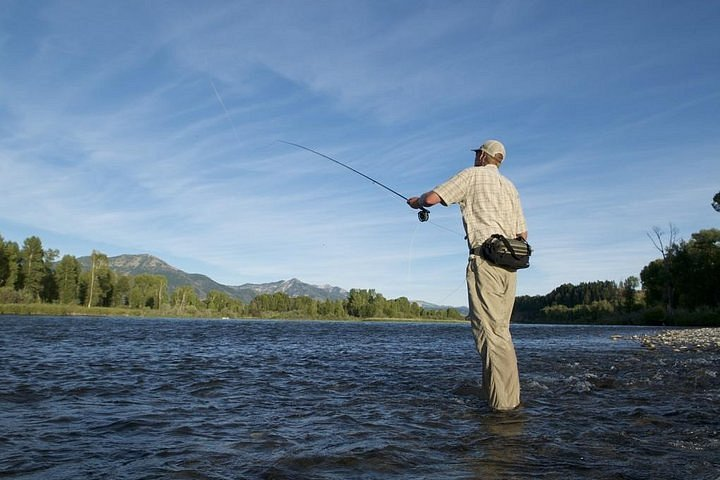
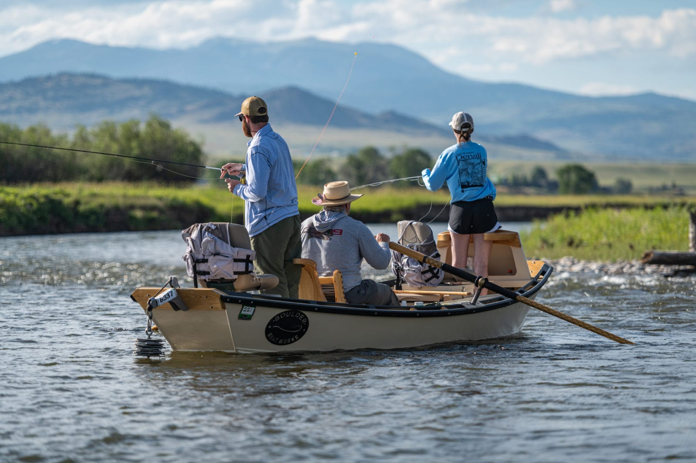

Explore Our Guided Trips

Fly fishing Montana's blue ribbon rivers, River Run Guides offers an unforgettable adventure for anglers of all levels.

Half-Day & Full-Day Trips
Join us for an unforgettable day on the water with our experienced guides. Perfect for beginners and seasoned anglers alike, these trips explore pristine Montana rivers teeming with trout.
- Half-Day Trip: $200 per person (4 hours, includes gear and instruction)
- Full-Day Trip: $350 per person (8 hours, includes gear, lunch, and transportation)

Multi-Day Adventures
Experience the ultimate fishing retreat with lodging, meals, and premium locations. Immerse yourself in the wilderness with guided fly fishing on some of Montana's most exclusive waters.
- 3-Day, 2-Night Trip: $1,200 per person (includes all meals, riverside lodging, gear, and guided fishing daily)

Group & Family Packages
Enjoy special group pricing and customized family-friendly excursions. Bring your crew or kids for a tailored adventure-great for team-building, reunions, or introducing the next generation to fly fishing.
- Groups of 4-6: $300 per person/day (includes gear and lunch)
- Family Package (2 adults, 2 kids): $800/day (includes gear, lunch, and kid-friendly instruction)
- Contact us for custom pricing for larger groups or special requests.